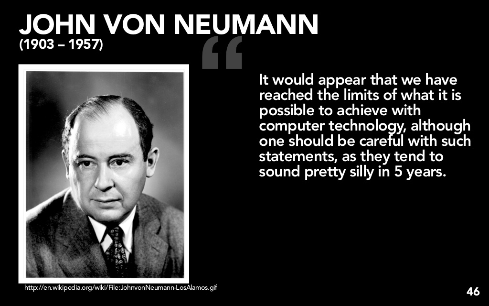

Fun Facts
- A Mathematician, Physicist, Inventor, Computer Scientist, Polymath
- He enjoyed off-color Yiddish humor
- A close friend, and fellow mathematician, once noted von Neumann would often sleep on an unsolved problem only to awaken with the solution!
- He wrote the first incomplete draft of EDVAC, which was prematurely distributed, and described a computer architecture in which the data and the program are both stored in the computer's memory in the same address space!
Early Age

- At Age 6, he could divide two 8-digit numbers in his head & converse in ancient greek
- At Age 8, learning differential & integral calculus
- At Age 15, Made his calculus tutor, famed Gabor Szego, cry in astonishment over von Neumann's mathematical talent. His math homework is still on display in the von Neumann archive in Budapest
- At Age 19, he wins national prize for his first mathematical publication
- At Age 23, finishes his PhD in chemical engineering at the University of Berlin
Young Adulthood
- At Age 24, starts first lectures at the University of Berlin, making him the youngest person elected to his role in any subject, in history
- At Age 29, he makes foundational contributions to the Ergodic Theory & credited as the first to establish rigorous frameworks for Quantum Mechanics, known as Dirac-vonNewman Axioms
- At Age 36, Rejected from active military service in WWII, but his pre-war analysis of France's fight against Germany is often quoted 'Oh, France won't matter.'
Later in Life

- At Age 40, he published his 'Theory of Games & Economic Behavior', and is credited for founding the field of 'Game Theory'... You're welcome ESPN!
- At Age 41, eyewitness to first atomic explosion in mankind
- At Age 45, invents a 'merge-sort' algorithim. He also wrote the 1st incomplete draft of EDVAC, which was prematurely distributed, describing a computer architecture in which the data and the program are both stored in the computer's memory & in the same address space.
- At Age 46, invents the first, self reproducing computer program, considered to be the first computer virus!